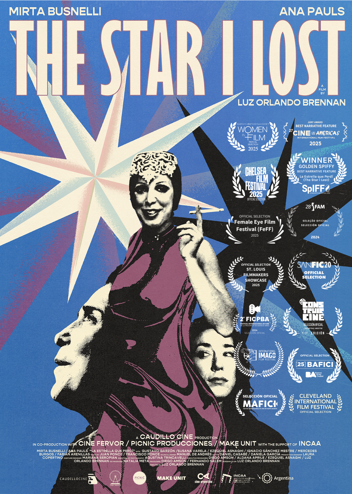
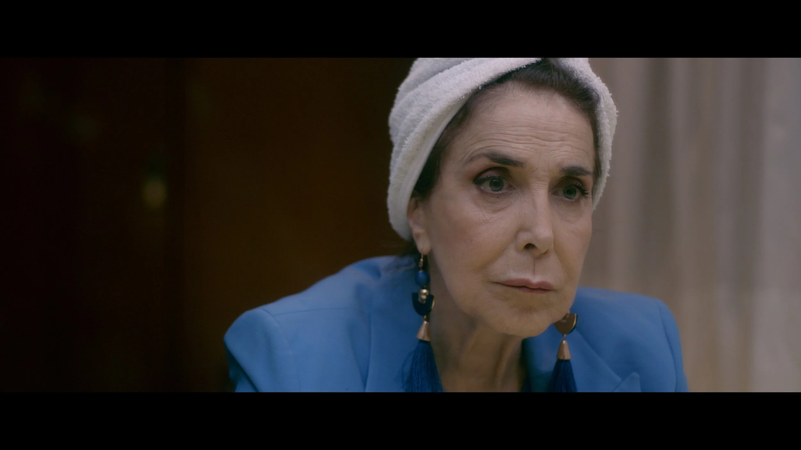
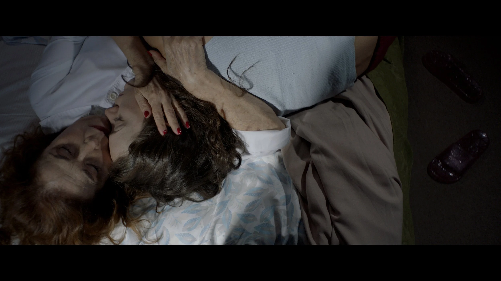
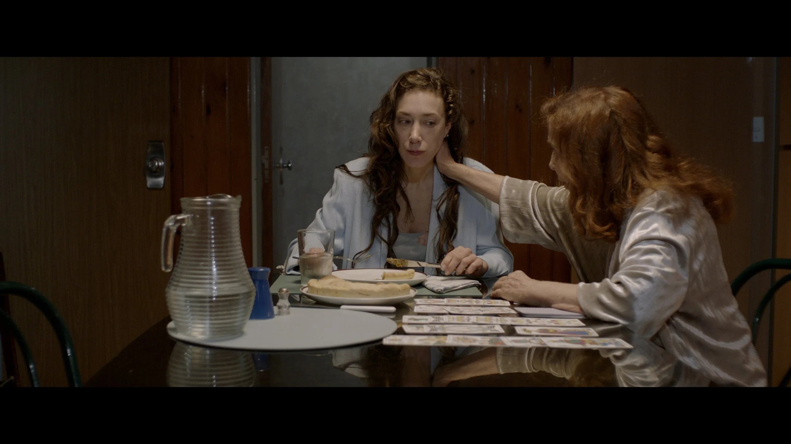
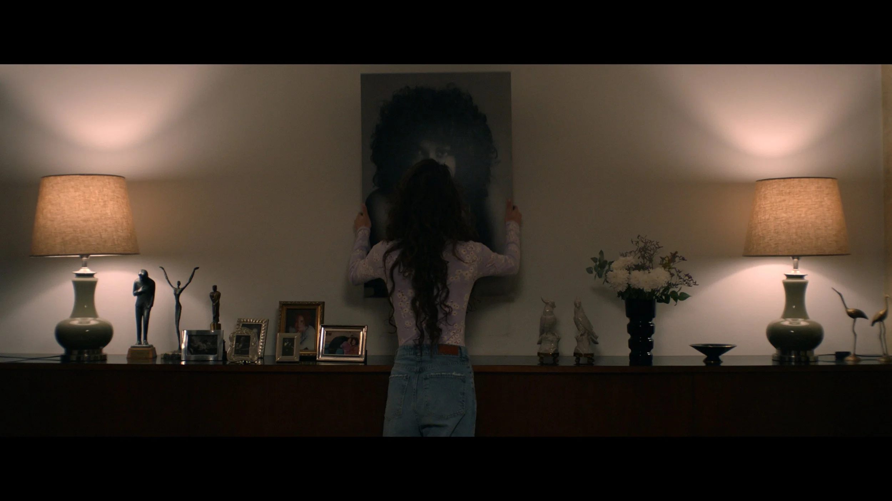
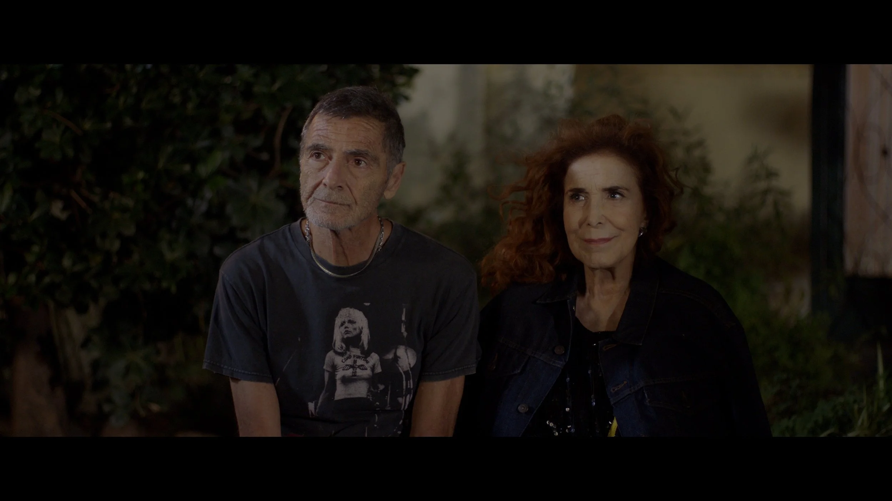
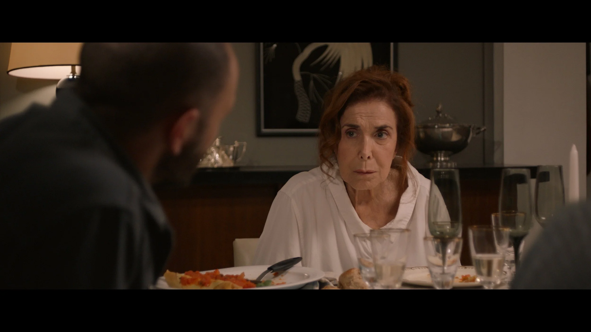
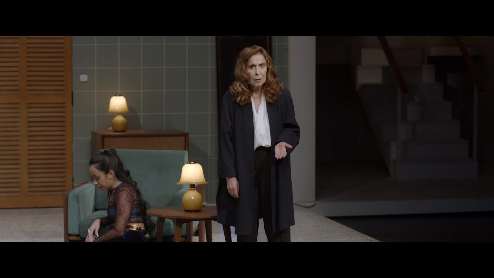
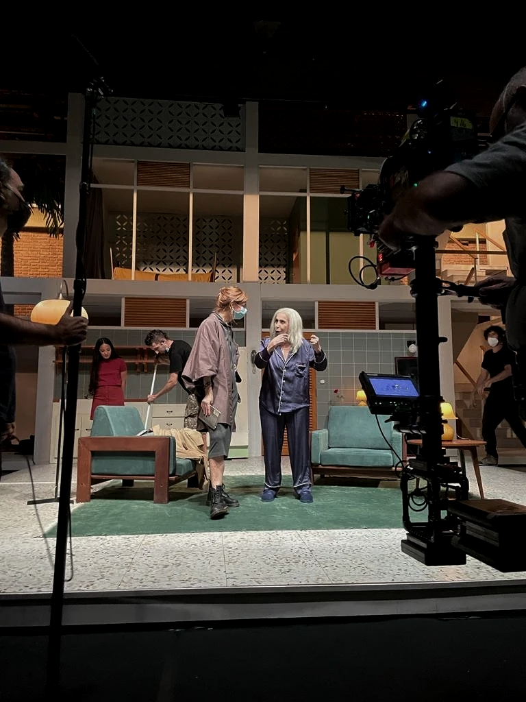
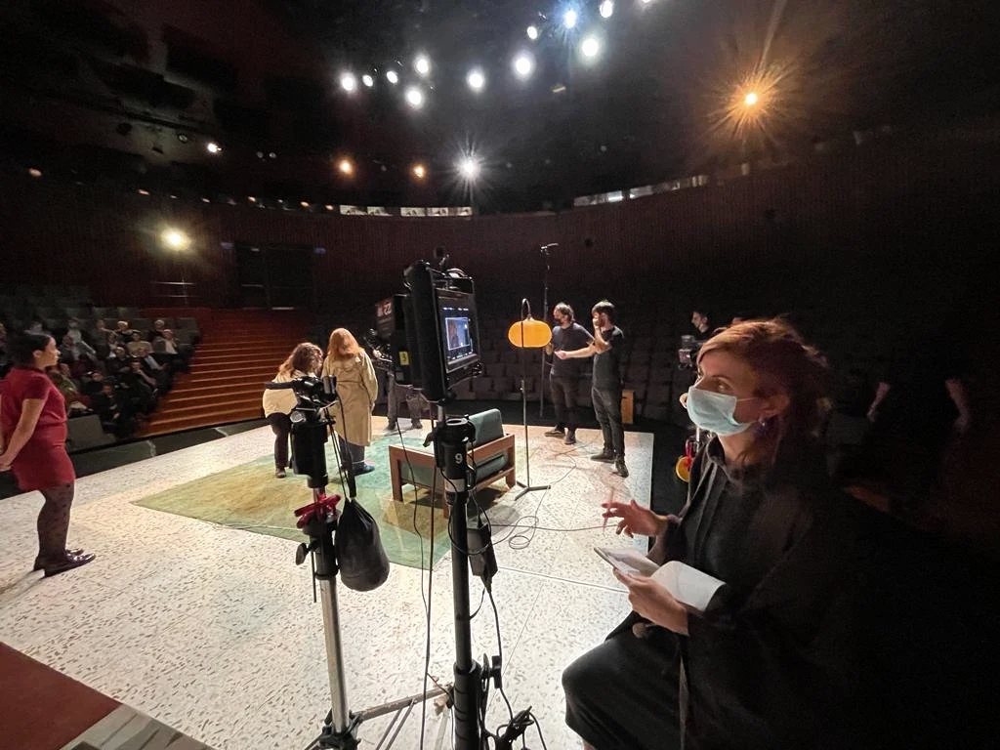

Make Unit has expanded into content development and incubation — working across live action, animation and AI-enhanced pipelines in 2D, 3D and hybrid workflows.
We combine a trusted network of human artists with AI-powered tools to amplify creative output and support productions from development through delivery.
Capabilities
- Live Action Development & Production
- 2D & 3D Animation
- Hybrid AI-Enhanced Workflows
- Script Development & Screenwriting
- Festival Strategy & Distribution
- Co-Production & Incubation

Creative Executive
Luz Orlando Brennan
Director · Writer · Executive Producer
The addition of Luz Orlando Brennan as Creative Executive marks a new stage for Make Unit. An award-winning filmmaker whose work spans live action, animation and hybrid formats, Luz leads the company's content development and incubation division.
Trained at ENERC and UBA, her feature film La Estrella que Perdí screened at Cleveland IFF, BAFICI, SANFIC and FAM. She contributed to El Prófugo, selected for Berlinale, and co-directed an animated short recognised at Annecy and awarded the Premio Madrid Film Office at MIANIMA.
Make Unit is now expanding into live action, animation and AI-enhanced production — across 2D, 3D and hybrid formats — with Luz driving the creative vision.
Selected Credits
Featured Project
Director · Writer
La Estrella que Perdí
A feature film written and directed by Luz Orlando Brennan. The film premiered at major international film festivals, earning wide critical recognition across Latin America and beyond.









